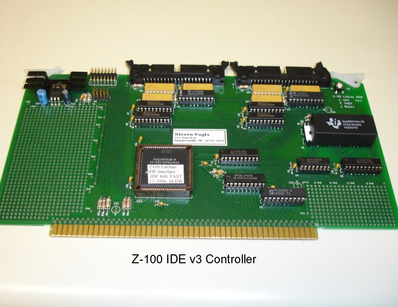

|  |
Z-100 IDE Devices
|

|
There are four popular IDE devices in use with the Z-100 IDE Controller. These are: |
 |
IDE Drives | |
|
|
Compact Flash Memory Units in 3.5" Adaptor | |
|
|
Compact Flash Memory Plug-in Units | |
|
|
Disk On Module Memory Plug-in Units |
|
Considerations and Physical Limits:
+ These IDE devices are 40-pin units. There are 44-pin IDE devices on the market, but these devices have four extra pins to provide power within the cable assembly. You would have to modify the cable to use these devices.
+ Drives can retain any PC Operating System, which could still use a 16-bit FAT
+ Each Z-100 accessible partition will be limited to 2 GBs in size
+ Maximum drive size that could be used with the Z-100 will be 137 GBs,
+ We have found that some software (e.g., Peachtext 5000) do NOT recognize partitions
+ The IDE drives will ONLY be recognized by Z-DOS v4.06. No previous versions of DOS, We hope to modify other operating systems to use the IDE drives in the future. NOTE: Newer drives, larger than 137 GBs, are already on the market that meet the new 48-bit LBA addressing standard of ATA/ATAPI-6. Presently, it does not appear that these will be supported by the Z-100. This isn't presently considered a problem because at 2 GB each, what's a person already going to do with 67 partitions? TIP: Unless you are leaving a large FAT32 partition for use in a PC or clone, it is recommended that you look for devices that are about 1 - 2Gb in size for practical reasons.
|
|
Programming IDE Devices:
Notes: + While it was envisioned that the IDE devices could be prepared on the Z-100, at the present time, it is best to prepare them on a PC or compatible. An older unit running Windows 95 or 98 is all that is necessary. + While Windows FDISK will work properly on the larger partitions, we found that it will NOT correctly create partitions less than 32Mb needed to be recognized by the Z-100 operating systems. This is still being investigated. + Free FDISK is available from other sources that will correctly create partitions less than 32Mb, however, it presently has its own bug that will not correctly determine the size of the last partition! Free FDISK is distributed on the CD with each system sold. Device Preparation Procedures Note: For those that prefer reading or having the printed procedures beside you while you work, a more complete version of the following can be found published as the Insert in the January - February 2005 issue (#97) of the "Z-100 LifeLine". While that information is more complete, with a full discussion on file systems, than the brief description given here, some information presented in that article is dated. Please refer to these procedures as more current - particularly the notes, warnings, and cautions. Note: The 2005 article was written using Windows FDISK, before we found out about having to use some partitions smaller than 32Mb for some software. As pointed out earlier, Windows FDISK has problems creating these smaller partitions and having them recognized by the Z-100. The procedures below will be corrected to use Free FDISK, which has it's own problems, which will be pointed out below. Note: Additional information on the Compact Flash and Disk on Module Units can be found in Inserts to the May 2008 "Z-100 LifeLine", issue #113. Note: Before beginning, you must have some partition plan to follow. This will involve figuring out the size and number of partitions, and also the order. Some users prefer having the smaller partitions first, as these will be the most often used for our applications, such as Multiplan, Word Star, Peachtext, etc. The larger partitions should be used to permanently store the application's source disks, have our full \DOS directory of files (remember to place this subdirectory in the PATH command line of your AUTOEXEC.BAT file), or used for backup copies of the smaller partitions. Note: Also, you must consider the environment that the IDE devices will be operating in. Will this IDE device be the only hard drive on the computer, or will it be installed with an MFM system? The NVsRAM on the IDE Controller should be programmed accordingly. I can send you a disk for reprogramming the NVsRAM for either system, if necessary. Note: The Z-100 IDE Controller does not care if the IDE device is master or slave, unless more than one device is placed on either controller. The software driver will automatically detect each IDE device. Note: The IDE device can retain its boot partition from a PC, if necessary, as long as this partition is using the FAT32 filing system - used my most later versions of Windows. This filing system is not recognized by the Z-100 IDE system and is therefore blind to it. Be sure not to destroy this partition (must be first) while using FDISK. CAUTION: You must have access to an IDE connector in your PC and a Windows Startup Disk. As you are playing with FDISK, to avoid damaging the PC's own hard drive, I recommend disconnecting it from the system to avoid inadvertently reformatting the wrong drive!! It will not be needed and can be reconnected after all this stuff is done. Note: If you are going to use Free Fdisk, I recommend having it on its own floppy disk and then just install that disk when you are ready to run FDISK. Do NOT mess with your PC's Startup Disk, unless you have a spare. WARNING: Changing or deleting partitions will permanently delete any data that was on the partition and it cannot be retrieved! Back up everything that is important to you before you use FDISK. Finally, after reading all this, if you are uncomfortable doing any or all of this, or if you don't have access to a PC that you care to mess with, don't hesitate to call or e-mail me. I have some spare drives & other devices and can do all this for you, including creating the software for your complete Z-100 system for reasonable prices. Now, let's get started: To Partition an IDE Device: -- Open the PC and remove the IDE cables to the internal hard drive and any CD/DVD devices. These will not be used. -- Insert the Startup Disk in the floppy disk drive of the PC. -- Power up the PC. It should recognize the Startup Disk in Drive A: as the boot device automatically. If not, or if the IDE device has an operating system on an active partition, enter the BIOS and look for an entry that changes the boot device. It may be set for the hard drive only. Change it to "A,C". -- When the Windows Startup Menu is displayed, select the Start computer without CD-ROM support menu option, and then press {ENTER}. -- At the command prompt, A:> you may wish to use Windows FDISK to view the existing partitions, but if you are ready to create some partitions less than 32Mb, I recommend swapping out the floppy disk with the one that has Free FDISK. -- Type FDISK and press {ENTER} when ready. -- If your IDE device is larger than 512Mb, you may receive the following message: Free FDISK is capable of using large disk support to allow you to create partitions that are greater than 2,048Mb by using FAT32 partitions. If you enable large disk support, any partitions or logical drives greater than 512Mb will be created using FAT32. IMPORTANT: If you enable large disk support, some operating systems will be unable toi access the partitions and logical drives that are over 512Mb in size. Do you want to use large disk (FAT32) support (Y/N). [Y]? Unless to are going to keep a large FAT32 active partition with a Windows Operating System on it, you can press {N} and {ENTER}. If you press {Y}, however, and keep your partitions smaller than 512Mb, you would still be fine. -- The opening screen next becomes (note, the text will be centered on your computer):
Free FDISK Version 1.2.1 FDISK Options
Current Fixed Disk Drive: 1
1. Create DOS Partitions or Logical DOS Drive Enter choice: [1] -- Pressing {4} will display the present partition information. For example, for my Seagate ST31276 drive, it displayed the following: Display Partition Information Current fixed disk drive: 1
Partition Status Type Volume Label Mbytes System Usage Total disk space is 1223 Mbytes (1 Mbyte = 1048576 bytes)
The Extended DOS Partition contains Logical DOS Drives. Press ESC to return to FDISK options -- Pressing {Y} and {ENTER} gave the following: Display Logical DOS Drive Information
Drv Volume Label Mbytes System Usage Total Extended DOS Partition size is 221 Mbytes (1 Mbyte = 1048576 bytes) Press ESC to continue_ Pressing {ESC} takes us back to the FDISK Options Menu. -- Before you create partitions, unless you have a new drive, you will have to delete some partitions. So press {3} to go to the delete Partition screen: Delete DOS Partition or Logical DOS Drive Current fixed disk drive: 1
Choose one of the following: Enter choice [_] Press ESC to return to FDISK options -- As you saw how my partitions were laid out, I'd have to delete the Logical Drive letters one at a time working my way up the partition list until I had all the space that I needed to repartition as I wished. On most existing drives they will have probably two primary partitions and probably one Extended Partition divided into one or more drive letters. Referring to your desired partition plan, you may have to delete everything before you can proceed. Just follow the choices until you have completed what you need. Note: Remember to leave one Primary Partition, of sufficient size, for your PC if you are planning to use the IDE device as your PC boot device. If you are not, the PC will still recognize all partitions and data on the device any time it is plugged into the PC, so transferring data between the PC and Z-100 is just a matter of plugging the device in. This is considerably easier if you install a Compact Flash device in the PC and Z-100. -- Once you have completed deleting, you are ready to recreate the new partitions. From the FDISK Option Menu, select {1}. This brings up the menu: Create DOS Partitions or Logical DOS Drive Current fixed disk drive: 1
Choose one of the following: Enter choice: [_] Press ESC to return to FDISK options -- Depending upon what you deleted, you can proceed to create partitions accordingly. Most PC systems recognize two to four primary DOS partitions. The Z-100 doesn't care; it can't detect the difference between a primary DOS partition or a logical drive letter. It treats all the partitions the same. One difference of note, however, will be the partition order. As you look at the drive letters above, FDISK listed the first primary and second primary partitions first, then listed the extended partition next, but the second primary partition's drive letter is listed last, I. The physical positioning is as created: First Primary, Second Primary, then the smaller divided up Extended Partition - the same order that the Z-100 will detect. Therefore, the device's drive letters on the PC will NOT match the order on the drives in the Z-100. Note: To keep track of drive letters, I recommend giving each partition a name when the partition is formatted, in the order that it was created and will be detected on the Z-100. For example, each of the ST31276 drive's partitions was given the drive's name and a letter to represent it. The first partition was named, ST31276x, where x was A, the second, B, etc. Then when I use ZDIR on a partition, the drive's label is right there to help keep me straight. Naming your partitions is particularly helpful if you have multiple IDE devices on the Z-100, because the Z-100 detection system has a similar problem to the PC's addressed in the last note. With two or more IDE devices detected, the drives will be listed in the order of:
Master IDE1, first partition This was done on purpose, expecting that each device would only have one or two partitions. However, we have since found out that many if not most Z-100 software applications will not recognize partitions greater than 32Mb due to address limitations. This forced us to divide the IDE devices into numerous smaller partitions. Unless you name your partitions on each device, good luck keeping it all straight!
How to Format an IDE Device After you create the partitions, and you are happy with each of their sizes, you must format each partition. It is recommended that this be done from the Windows Startup Disk. While the Z-100 has PCFORMAT that could be used, it is relatively untested. I've used it a few times to fix partitions where the File Allocation Table was messed up by corrupted write operations during testing of the IDE controller and I had great success. But usually I've been using the Windows Startup Disk utilities because these are handy (having just created the partitions here) and they are well tested. I've also had to use SCANDISK to straighten out FAT problems that my testing on the Z-100 had created. -- Restart the PC computer with the Windows Startup Disk. This is to recognize the new partitions that were created with FDISK or Free FDISK. -- Run FORMAT X:, where X: is the drive letter of the new partitions detected by the PC. These will start at drive C: and go up from there. Remember, the partition order will be different from that which will be given by the Z-100. On the PC, the Second Primary Partition will have the last drive letter - with exceptions. For example, if you used three or four primary partitions, without any logical drives, the order will remain as expected! -- When FORMAT asks for a volume label, give it one. I suggest it be the drive model number and a letter. The volume labels are given during directory listings.
|

z100lifeline@earthlink.net
|
HOME
|
History Page
|
Z-100 Page
|
Repair Page
|
|
Copyright © 2009, Steven W. Vagts Revised -- December 15, 2009 |

|